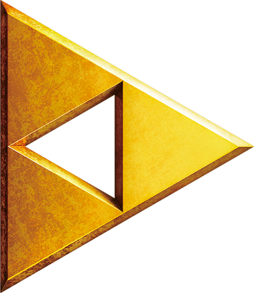
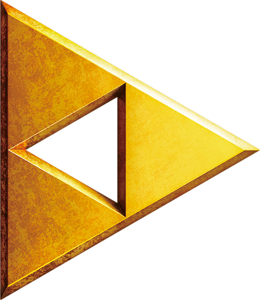

The Legend of Zelda Visuals Design
The earliest form of Link has a lot more room for interpretation due to his small size, however, this design did set the groundwork for one of the most iconic characters in video game history. Another interesting facet of this design is the more anime aesthetic Link had in his character design; this design reflects Link as a product of his home country rather than being designed to mass appeal for international audiences. The original Link somewhat represents Nintendo’s humble beginnings as a local developer rather than the super-corporation they are known as today.

Ocarina of Time Visuals Design
With a new Era of console came a revision of design for Nintendo's most iconic franchises. The Legend of Zelda was in for a makeover featuring its first debut into 3D. Not only did the designs need to be simple, but also able to communicate two different versions of the same characters in both the present and future. This specific incantation of Link defined many of the future design principles of Link, with blonde hair, pointed ears and a small nose.

Skyward Sword Visuals Design
The release of Skyward Sword marked a new generation of games as it was the only Zelda developed specifically for the Wii. With a new wave of fans entering the franchise, Link received a far more realistic design to match the expectations for higher visual fidelity. Most of the designs from ocarina of time stay consistent with this link, aside from more complex clothes and a more rounded face.

Breath of the Wild Visuals Design
Breath of the Wild changed Link’s signature color. Replacing the classic green tunic Link wears a blue tunic in official art. Link was also designed to be more gender neutral in appearance so all players could relate with Link.